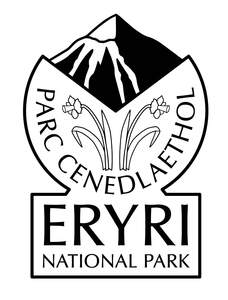
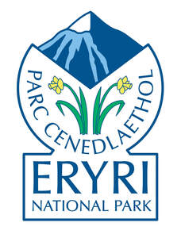

Trade Mark Journal No.2025/020 16 May 2025
UK00004197678 1 May 2025 (9,14,16,25,28,35,41)
Mark 1

Mark 2

- Class 9
- Electronic publications (downloadable); downloadable maps; downloadable electronic brochures; downloadable software applications relating to national parks; downloadable multimedia files featuring information about national parks; downloadable audio guides; downloadable videos featuring national parks; downloadable images relating to national parks; podcasts; magnets.
- Class 14
- Medals; ornamental pins; key rings; key chains; jewellery; badges of precious metal; charms; commemorative coins; watches; clocks.
- Class 16
- Printed publications; books; information booklets; printed guides; printed matter relating to national parks; flyers; stationery; stickers; maps; charts; posters; photographs; cards; postcards; greeting cards; calendars; art prints; framed pictures; artists’ materials; writing instruments; teaching materials; educational materials in printed form.
- Class 25
- Clothing; headwear; footwear.
- Class 28
- Games; board games; puzzles; card games; educational games relating to nature and national parks; toys; playsets for educational purposes; sporting articles; outdoor activity equipment for recreational purposes.
- Class 35
- Retail and online retail services relating to the sale of electronic publications (downloadable), downloadable maps, downloadable electronic brochures, downloadable software applications relating to national parks, downloadable multimedia files featuring information about national parks, downloadable audio guides, downloadable videos featuring national parks, downloadable images relating to national parks; retail and online retail services relating to the sale of podcasts, magnets, medals, ornamental pins, key rings, key chains, jewellery, badges of precious metal, charms, commemorative coins, watches, clocks, printed publications, books, information booklets, printed guides, printed matter relating to national parks; retail and online retail services relating to the sale of flyers, stationery, stickers, maps, charts, posters, photographs, cards, postcards, greeting cards, calendars, art prints, framed pictures, artists’ materials, writing instruments, teaching materials, educational materials in printed form, wallets, bags, backpacks, rucksacks, tote bags, luggage, travelling bags, hiking bags, belt bags, purses, pouches of leather or imitation leather, umbrellas, walking sticks, key cases, luggage tags, clothing, headwear, footwear, games, board games, puzzles, card games, educational games relating to nature and national parks; retail and online retail services relating to the sale of toys, playsets for educational purposes, sporting articles, outdoor activity equipment for recreational purposes.
- Class 41
- Education; training; cultural activities; sporting and recreational activities; organisation of educational events; organisation of exhibitions for cultural or educational purposes; conducting guided tours; conducting courses, seminars and workshops; provision of educational information relating to national parks; provision of online non-downloadable publications relating to national parks; providing online non-downloadable videos relating to national parks; arranging and conducting online educational seminars and workshops relating to national parks.
Snowdonia National Park Authority
Representative: Potter Clarkson LLP